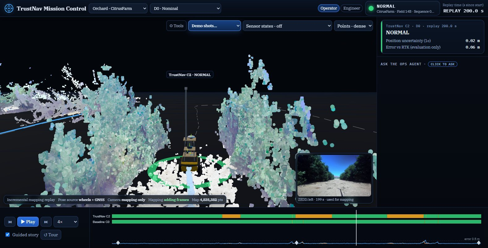

01 / TRUSTNAV · ORCHARD ROBOT OVERSIGHT
A clearer view.
A considered decision.
See the route. Understand uncertainty.
Know when your robot needs you.
Loading recorded reconstruction…
Orchard robot teams working
where GPS becomes unreliable.
A shared view of the route,
the evidence and the next step.
Recorded orchard data.
Designed for operator review.
What changed?
What should happen next?
A robot’s position is only part of the story. TrustNav brings the surrounding scene, positioning events and operator response into one reviewable workflow.
03 / THE OPERATOR EXPERIENCE
From a position.
To a decision.
A route alone doesn’t tell you whether to trust it. Follow the event, inspect the evidence, and record what happens next.
See the robot.
See its surroundings.
Explore the route, camera view and 3D map together in a synchronized replay.

04 / WATCH THE PRODUCT
Forty-six seconds.
The whole picture.
A recorded walkthrough of the prototype.
Choose a chapter or watch from the beginning.
46 seconds · No audio · Recorded prototype. Sensor-state paths at 00:23–00:31 are illustrative.
Read the video transcript
TrustNav: know when your robot’s position can’t be trusted. The console shows a recorded orchard route and camera map. A GPS outage leads to a HOLD recommendation and an operator ticket. Three illustrative sensor-state paths show the comparison concept. A short camera-mapping replay follows. The closing metric compares false-NORMAL time in replay tests; see the evidence and trade-offs below.
05 / EVIDENCE & TRADE-OFFS
When uncertainty rises,
visibility matters.
What this measures. Time reporting NORMAL while position error exceeds 0.5 m, divided by the full replay duration. Means across six held-out orchard sequences and three seeds, with injected GPS multipath.
The trade-off. Average position RMSE increased from 0.61 to 1.82 m. Without injected faults, TrustNav reported DEGRADED for 32.9% of the time. These are replay results, not field safety or productivity guarantees.
Source: CitrusFarm replay evaluation · D3, 18 runs per method · 2026-11-15 evaluation export.
06 / HYBRIDSWARM · SIMULATION SHOWCASE
Four perspectives.
One shared space.
Follow four simulated aircraft. Explore their camera views.
See the shared point cloud take shape.
EXPLORE THE FOUR-AIRCRAFT CONCEPT
More viewpoints.
A shared understanding.
Explore an animated four-aircraft illustration, then watch the recorded simulation below.
Illustrative flight paths · not measured trajectories
A separate HybridSwarm demonstration supplied by our collaborator. Integration with TrustNav is under review.
THE NEXT STEP IS YOUR ROBOT
Bring your route.
Let’s examine the decisions.
For orchard robot manufacturers evaluating positioning under canopy. Start with your recorded data, an agreed baseline, and a review of where intervention is needed.
Discuss a pilotYour logs.
A shared evaluation.
A practical integration plan.
Replay-based prototype.
Live robot integration and independent field validation are the next milestones.
Cheng-Chou Chang
allenbecareful@gmail.com
+886 922 748 788